01
Horizon-conditioned critic
Contrasts same-episode future pairs over multiple horizons to detect temporally informative outcomes.
Hamiltonian Temporal Contrastive Curiosity for Reinforcement Learning Exploration
Anonymous authors · ICLR 2027 submission
HTC2 formulates intrinsic exploration as temporal future discovery in a learned Hamiltonian phase space. It trains a horizon-conditioned contrastive critic on same-episode future pairs, then modulates the resulting temporal curiosity signal with bounded multi-step Hamiltonian variation.
Rewards futures that remain poorly organized by the current temporal representation.
Uses Hamiltonian phase variables to encode physically meaningful changes over time.
Evaluated on DeepMind Control Suite tasks with SAC and PPO against common intrinsic rewards.
The method combines temporal contrastive learning, learned Hamiltonian phase-space structure, and a bounded energy-variation modulation to guide policy exploration beyond local one-step novelty.
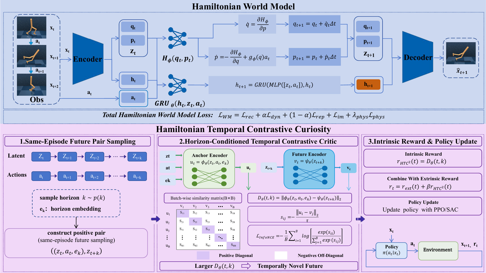
Contrasts same-episode future pairs over multiple horizons to detect temporally informative outcomes.
Represents dynamics with phase variables so curiosity can respond to structured physical transitions.
Uses multi-step Hamiltonian variation as structure-aware modulation rather than as a standalone objective.
HTC2 is evaluated across physical-control tasks and compared with prediction-error, state-novelty, representation-displacement, and uncertainty-driven exploration baselines.
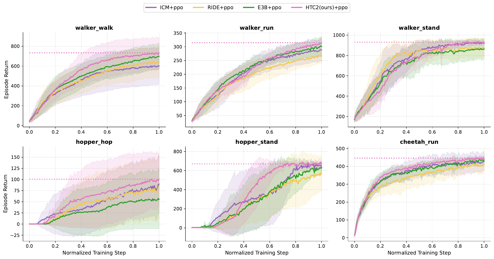
Task-level comparison under on-policy optimization.
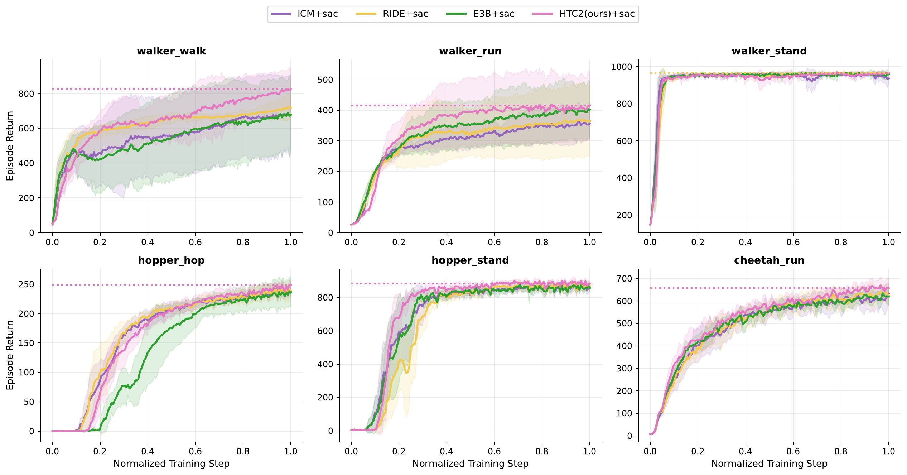
Task-level comparison under off-policy optimization.
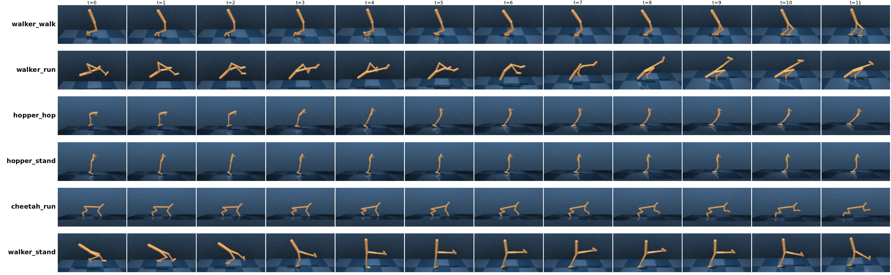
Aggregated rollout behavior across evaluated environments.
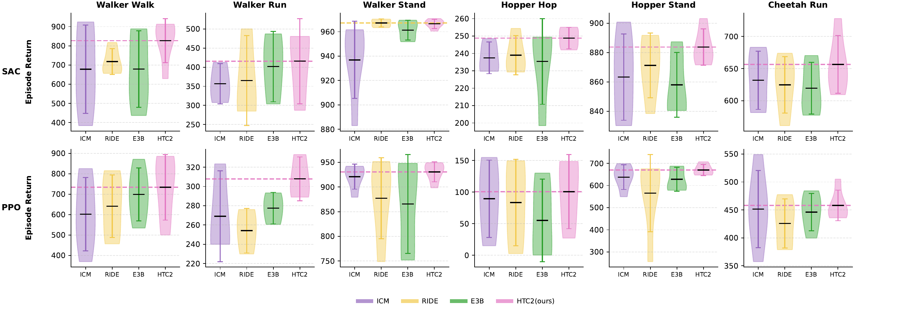
Distributional view of performance across methods and tasks.
Coverage visualizations help characterize how the intrinsic signal changes exploration behavior beyond final return.
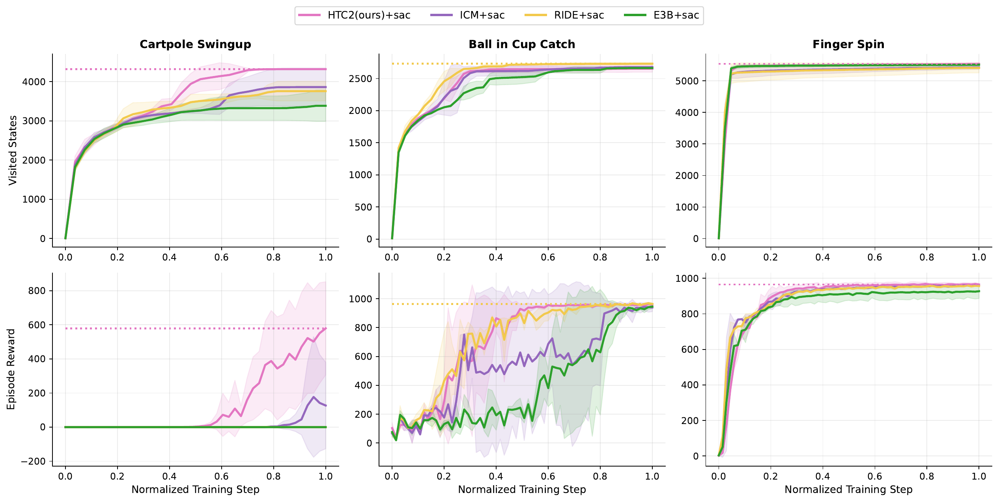
Coverage patterns under structured phase-space exploration.
Ablation and out-of-distribution tests examine whether temporal contrast, physical consistency, energy modulation, warm start, normalization, and dynamics-shift retention contribute to the exploration behavior.
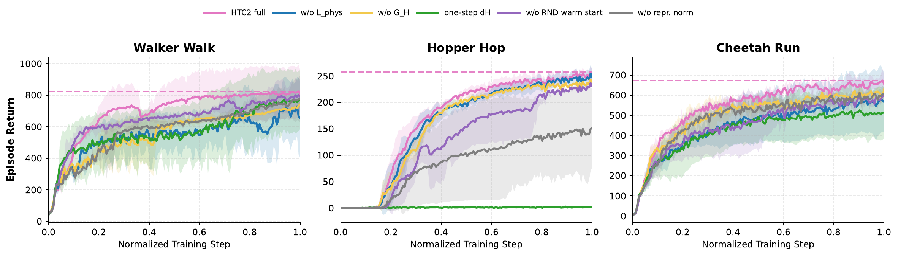
Component-level comparison of the HTC2 objective.
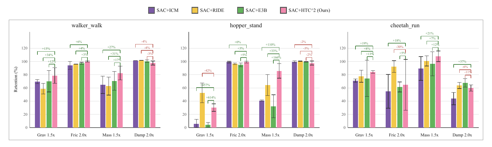
Robustness comparison against intrinsic-reward baselines.
Diagnostic probes visualize how learned phase variables, Hamiltonian energy, and action-conditioned geometry organize across tasks and control modes.
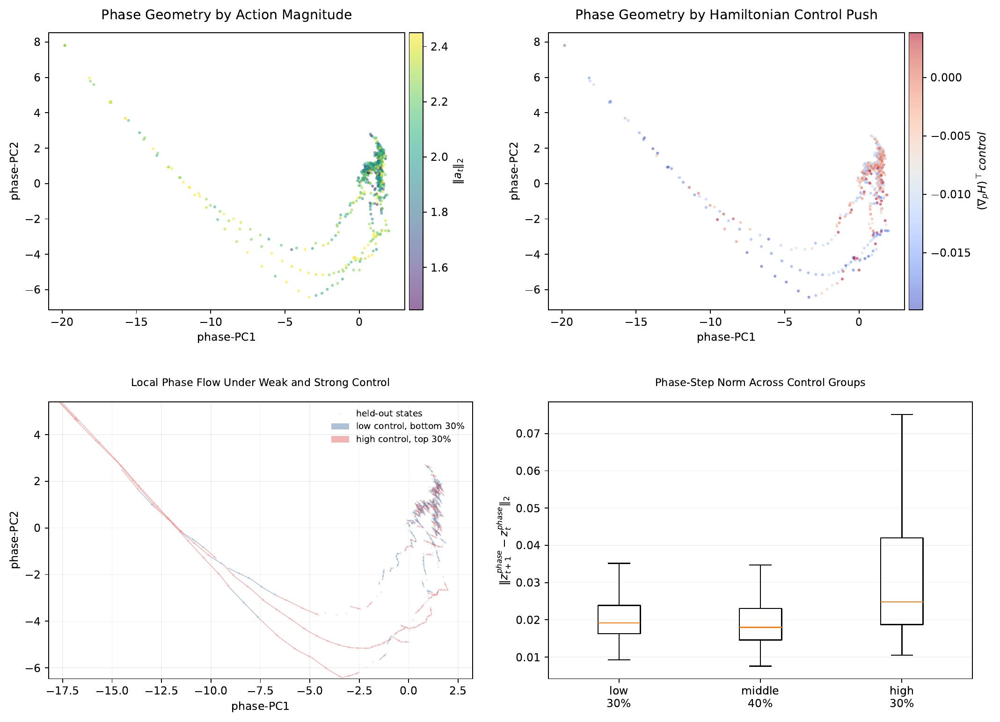
Phase-space organization under action-conditioned transitions.
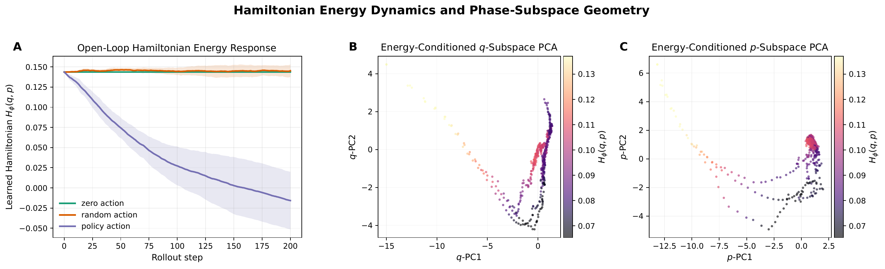
Energy-organized structure in learned phase latents.
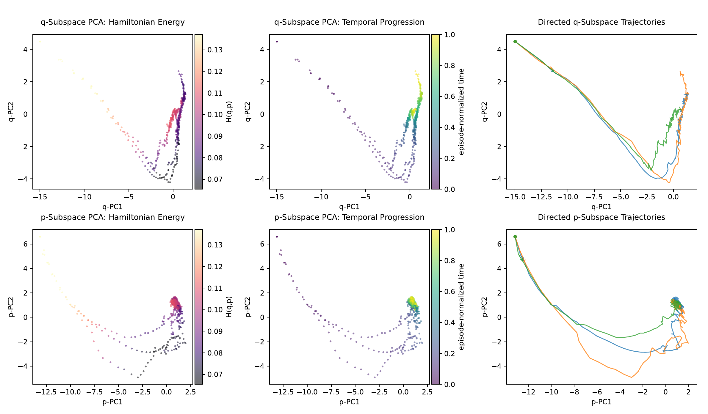
Projection view for position-like and momentum-like phase variables.
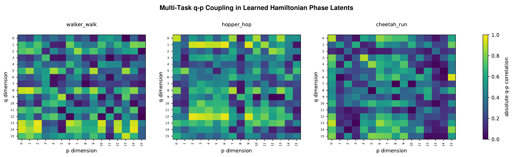
Coupling pattern across multiple control tasks.
The final citation will be updated after the paper link is ready. The placeholder preserves anonymous review.
@inproceedings{anonymous2027htc2,
title = {Hamiltonian Temporal Contrastive Curiosity for Reinforcement Learning Exploration},
author = {Anonymous Authors},
booktitle = {Anonymous ICLR 2027 Submission},
year = {2027}
}